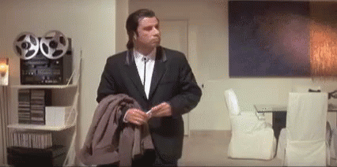
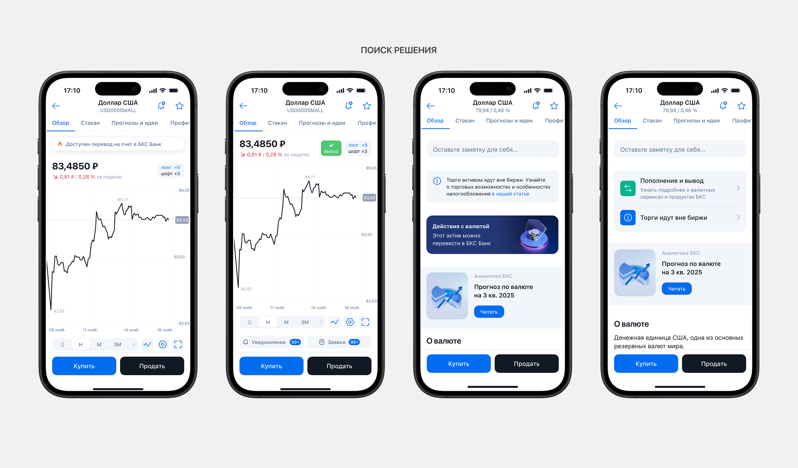
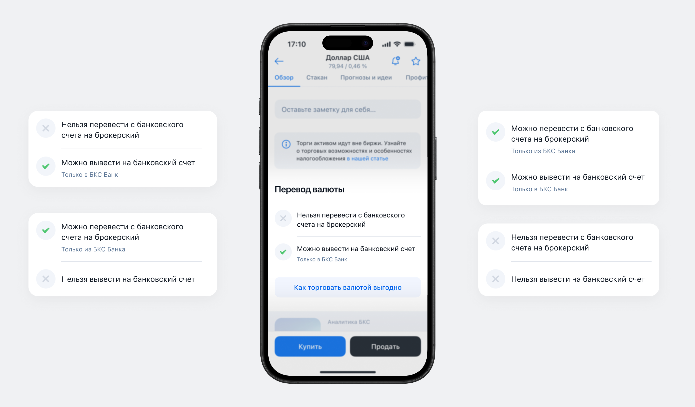
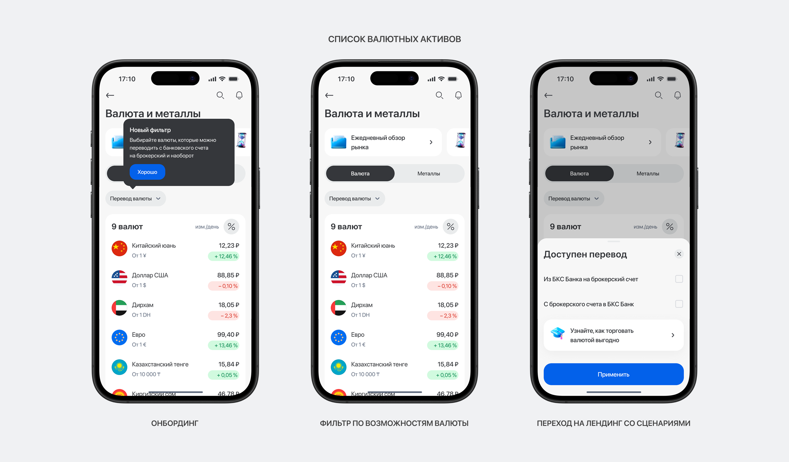
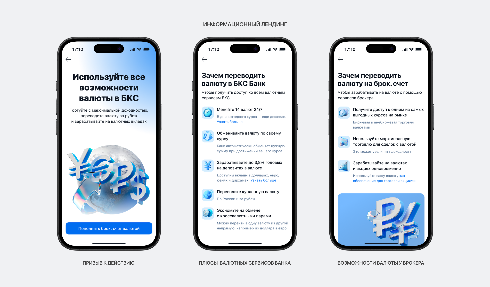

Онбординг инвестора: как объяснили клиентам, что делать с валютой после покупки
Повысил конверсию в валютные сервисы и помог клиентам
«БКС Мир инвестиций» — российская компания, оказывающая брокерские и инвестиционные услуги (операции на фондовом и финансовом рынках, управление активами, финансовое консультирование)
Контекст
После покупки валюты в приложении брокера пользователи «выпадали» из воронки. Аналитика и опросы показали: клиенты не понимали, что делать с активом на брокерском счете дальше. Валютный флоу воспринимался как изолированная операция, а не часть экосистемы

Какая стояла задача
Спроектировать решение, которое подскажет пользователю выгодные сценарии использования валютных сервисов и увеличит конверсию в повторные действия.
Ограничение — регуляторные условия периодически меняются, интерфейс должен легко обновляться без частых релизов. Плюс частичный редизайн приложения (смесь старого и нового UI)
Что сделал
Проанализировал флоу покупки валюты, экраны работы с валютными активами, а также изучил опросы и глубинные интервью. На основе этого определил ключевые точки контакта.
В списке валютных активов добавил визуально выделенный фильтр — он ведет на лендинг с актуальными сценариями.
В карточке валюты внедрил систему «чекпоинтов», которая наглядно отделяет доступные операции от потенциальных.
Результат и метрики успеха
Конверсия в целевые действия с валютой выросла. Пользователи перестали «застревать» после покупки — удержание во флоу повысилось. Лендинг и «чекпоинты» теперь обновляются без правок кода приложения.



